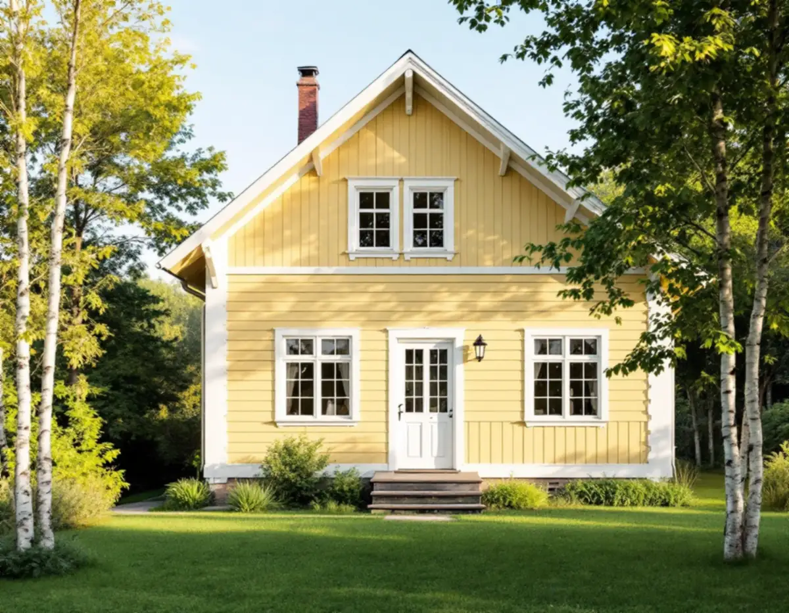
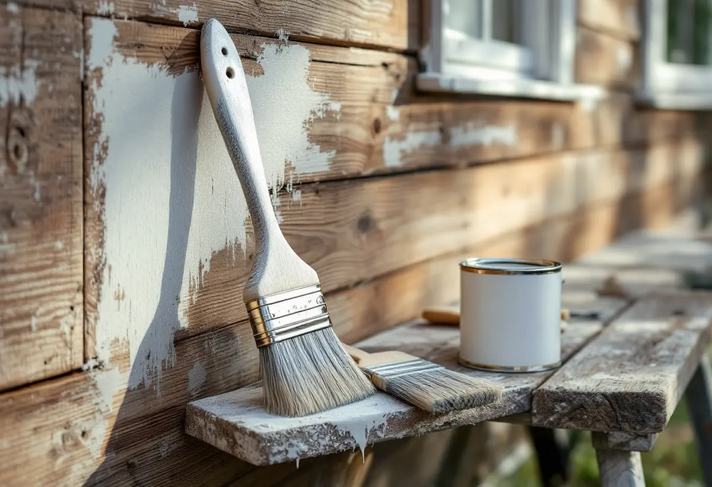

Platsbesök
Vi tittar på underlag, färglager och skador och frågar vad du vill uppnå med kulör och glans.
Ska villan målas om ute eller inne tar Geal hand om hela jobbet, från tvätt, skrapning och lagning av trä till sista strykningen på fasad, fönster, väggar och tak. Färgtypen väljs efter vad huset är målat med i dag, och ROT-avdraget dras direkt på fakturan.

Det viktigaste beslutet när en träfasad ska målas om är vilken färgtyp som ska på. Riksantikvarieämbetets handbok Byggnadsmåleri råder fastighetsägare att i de flesta fall stanna vid samma färgtyp som tidigare, och särskilt utomhus på ytor med linoljefärg, slamfärg, trätjära eller kalkfärg. Att lägga en modern färg ovanpå en äldre typ beskrivs som en teknisk risk: nästa underhåll blir krångligt, och vill man gå tillbaka krävs i praktiken att all gammal färg tas bort.
Därför börjar vi med att ta reda på vad som faktiskt sitter på väggen. På ett hus som målats om många gånger kan även en erfaren målare ha svårt att avgöra vilka färger som använts, eftersom antalet färgtyper mångdubblades under 1900-talets andra hälft. Vi skrapar fram lagren och provar på en mindre yta när det behövs. Först därefter bestäms färgsystem och antal strykningar.
Slamfärg, oftast den röda, är matt, vattenspädbar och släpper igenom fukt. Den fäster bra på ohyvlat virke men sämre på hyvlad panel, och enligt handboken är den den mest underhållsvänliga av alla färgtyper: borsta av och måla om. Linoljefärg stryks i flera tunna lager och torkar långsammare än moderna färger. Rätt sammansatt och påförd anges den hålla i ungefär 15–20 år, beroende på hur utsatt fasaden är. Har huset en modern fabriksfärg gäller samma princip: underlaget styr nästa färg.

En fasadmålning är till största delen förarbete. Ytan tvättas, spikar som krupit ut slås in och all lös färg borstas och skrapas bort. Grånat trä, så kallat blåträ, slipas ner till frisk yta, och rötskadat virke byts mot nytt – ofta ändträ längst ner på panelen och kring fönstren. Högtryckstvätt är vanligt i dag, men den som tvättar måste behärska tekniken så att vatten inte trycks in i väggen.
Hur mycket som ska grundas beror på skicket. Handboken anger att det räcker att grunda de skadade partierna när omkring tio procent av färgskiktet är skadat, medan hela ytan bör grundas när 30–40 procent är skadat. Fönstersnickerier, vindskivor och sydfasader tar mest stryk och behöver målas oftare än resten av huset. Att bättra dem i tid kan skjuta upp en hel ommålning.
Väder och säsong spelar stor roll. Linoljefärg bör strykas när det är varmt och torrt, med en fukthalt i träet på högst cirka 15 procent. Riksantikvarieämbetet nämner maj–augusti som bästa period och avråder från stark direkt sol, som kan ge blåsor. I praktiken följer man solen runt huset och målar de väggar som redan har varit solbelysta. Ska huset målas i grått, vitt eller en annan ny kulör gäller samma förarbete – det är underlaget som avgör resultatet.
Inomhus målar vi väggar, tak, snickerier, dörrar och element, och vi tapetserar. Arbetsgången liknar den utvändiga: golv och inredning skyddas, sprickor och hål lagas, ytorna spacklas och slipas, grundas där underlaget kräver det och stryks sedan färdigt. Ett jämnt resultat avgörs nästan helt av spacklingen och av att varje lager får torka ordentligt innan nästa.
I äldre villor kan det finnas traditionella färger kvar under senare lager. Limfärg var vanlig i tak ända fram till 1950-talet och användes som tryckfärg på tapeter. Den är känslig för fukt och passar därför inte i kök och badrum, och det befintliga lagret styr vilken färg som kan läggas ovanpå. Linoljefärg hörde ännu på 1950-talet till de vanligaste färgerna och kan sitta kvar på äldre snickerier.
Ska huset renoveras mer än så samordnar vi måleriet med övriga hantverkare i samma entreprenad. Läs mer om renovering av villan eller om hur Geal arbetar som byggfirma med total entreprenad. Behöver taket målas samtidigt finns takmålning som egen tjänst.
Sedan den 1 december 2025 behövs inte bygglov för att byta kulör på ett en- eller tvåbostadshus, och inte heller för att byta material på fasad eller tak. Det framgår av Boverkets PBL kunskapsbanken. Att måla om i samma kulör som tidigare räknas normalt som underhåll.
Undantagen är många i Stockholmstrakten. Lov krävs ändå om huset omfattas av skyddsbestämmelser i detaljplan eller områdesbestämmelser, om det är en särskilt värdefull byggnad, om det ligger i ett särskilt värdefullt bebyggelseområde eller om planen har utökad lovplikt. Stockholms stad hänvisar till Stadsmuseets klassificeringskarta som en första indikation, där blå och grön markering betyder höga kulturhistoriska värden. I grannkommunerna får du fråga bygglovsenheten.
Boverket påpekar att ett byte av färgtyp, till exempel från slamfärg till silikonhartsfärg eller från linoljefärg till plastfärg, inte är ett kulörbyte men kan påverka byggnadens yttre karaktärsdrag. Det spelar roll för flerbostadshus inom detaljplan, där fasadändring mot gata eller park fortfarande kräver lov, och i skyddade miljöer. Även lovfri målning ska följa varsamhetskravet och i vissa fall detaljplanen.
Vi tittar på underlag, färglager och skador och frågar vad du vill uppnå med kulör och glans.
Förarbete, färgtyp, antal strykningar och ROT-avdrag står specificerat.
Vi kontrollerar om huset är klassat eller har skyddsbestämmelser innan en ny kulör beställs.
Tvätt, skrapning, lagning av trä eller puts, spackling inomhus och grundning.
Mellan- och slutstrykning i lämpligt väder, med torktid mellan varje lager.
Vi går igenom ytorna tillsammans, bättrar det som behövs och städar upp.
I Skatteverkets lista över rotarbeten för småhus finns målning av golv, tak, väggar, fönster och element, målning av fasader samt tapetsering. Avdraget är 30 procent av arbetskostnaden, högst 50 000 kronor per person och år, och ROT och RUT får tillsammans vara högst 75 000 kronor. Material och resor ger inte avdrag. Geal drar avdraget direkt på fakturan.
I bostadsrätt är gränsen snävare: målning av väggar, tak, golv, element, innerdörrar och insidan av ytterdörrar och fönster ger avdrag, men inte målning av fasader eller utsidan av fönster. Att måla staket eller murar ger inte ROT.
Kostnaden styrs av ytans storlek och höjd, om det behövs ställning eller lift, hur mycket som måste skrapas och lagas, hur många fönster och snickerier som ingår och vilken färgtyp och hur många strykningar som krävs. Inomhus påverkar spackling, skyddstäckning och tapetval mest.
Vi kommer ut utan kostnad, tittar på underlaget och lämnar ett skriftligt kostnadsförslag där förarbete, färgsystem och ROT-avdrag är specificerade.
Panel, puts och tilläggsisolering.
Fasadrenovering i Stockholm →Byta eller renovera fönster.
Fönsterbyte i Stockholm →Målning av plåt- och betongtak.
Takmålning →Hela huset i en entreprenad.
Villarenovering →